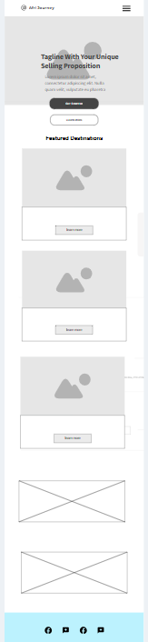

Sunny Trail Dog Walking Service — Site Plan
Site Name
Sunny Trail Dog Walking Service
Reason: clear, friendly, and evokes outdoor play and walking — easy to remember for local pet owners. Domain: sunnytraildogs.com
Site Purpose
- Introduce Sunny Trail: who we are and why pet owners should trust us.
- Describe services & pricing for walk types and play sessions.
- Provide a simple contact/booking page with hours, phone, and a short inquiry form.
Visitor Scenarios (examples)
- New local dog owner: "What packages do you offer for a medium‑energy dog, and how much will weekly walks cost?"
- Busy professional: "How can I quickly book a mid‑day walk or contact you if my schedule changes?"
- Safety‑conscious owner: "Are you insured, and what is your emergency or cancelation policy?"
Pages & Content Outline
- Home — Short hero intro, three value points (experienced handlers, insured, local trails), testimonials, call to action to Book.
- Services & Pricing — Packages (30‑min walk, 60‑min hike, off‑leash play), pricing table, add‑ons (multiple dogs, puppy socialization), FAQs.
- Booking / Contact — Contact form (name, dog info, preferred times), phone number, service area map, business hours, cancellation policy.
Color Scheme
#2E8B57
Primary
Primary
#FFD166
Accent
Accent
#F6F8F5
Card
Card
- Primary (var(--primary)): headings, primary buttons, CTAs, logo accent.
- Accent (var(--accent)): secondary buttons, highlights, icons, badges.
- Card / background: panels, content cards and wireframe placeholders for calm contrast.
This document uses the same color variables and demonstrates them in the swatches and wireframe areas.
Typography
No fewer than 1 and no more than 3 fonts. Selected:
- Poppins — headings (H1, H2, H3) for friendly, rounded headings.
- Open Sans — body copy and small UI text for legibility on screens.
Heading sample (Poppins)
Body sample (Open Sans): A short paragraph describing the service and keeping copy concise and scannable.
Home Page Wireframe (mobile & desktop)
Simple visual sketches below — these are conceptual layouts (mobile stacked and desktop with split content).


CSS & Styling Notes
- Use the color variables shown above across all pages for consistency.
- Keep a small set of utility classes for spacing and buttons (e.g., .btn, .btn--primary, .container).
- Layout: responsive mobile‑first using flexible containers and a max width of
var(--maxw).